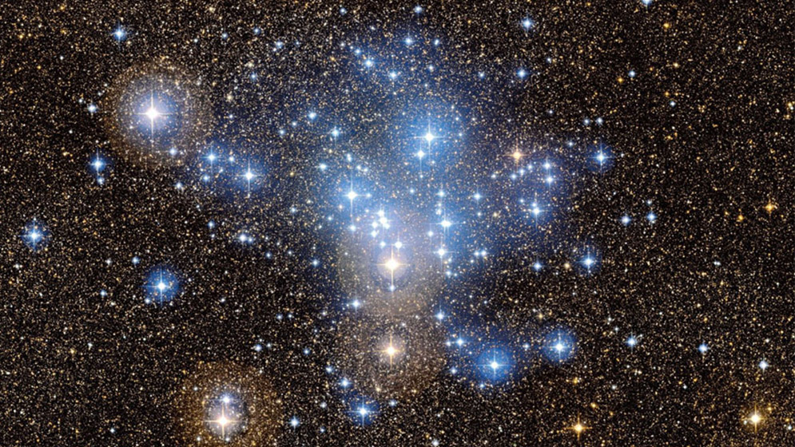

Cumulos estelares
Los cúmulos estelares son grupos de estrellas que se formaron a partir de
la misma nube de gas y polvo, y que permanecen unidas por la gravedad.
Son muy importantes porque nos ayudan a entender cómo
nacen y evolucionan las estrellas en el universo.

Tipos de cúmulos estelares
- Cúmulos abiertos
- Contienen entre decenas y miles de estrellas.
- Sus estrellas suelen ser jóvenes y azules.
- Se encuentran en el plano de las galaxias (como la Vía Láctea).
- Ejemplo: Las Pléyades en la constelación de Tauro.
- Cúmulos globulares
- Contienen cientos de miles o millones de estrellas.
- Sus estrellas son más viejas y rojizas.
- Tienen forma esférica y orbitan alrededor de las galaxias.
- Ejemplo: Omega Centauri en la Vía Láctea.
Características generales
- Todas las estrellas de un cúmulo tienen aproximadamente la misma edad.
- Se mantienen unidas por la gravedad durante millones o incluso miles de millones de años.
- Son usados por los astrónomos como "laboratorios naturales" para estudiar la evolución estelar.
Volver al inicio